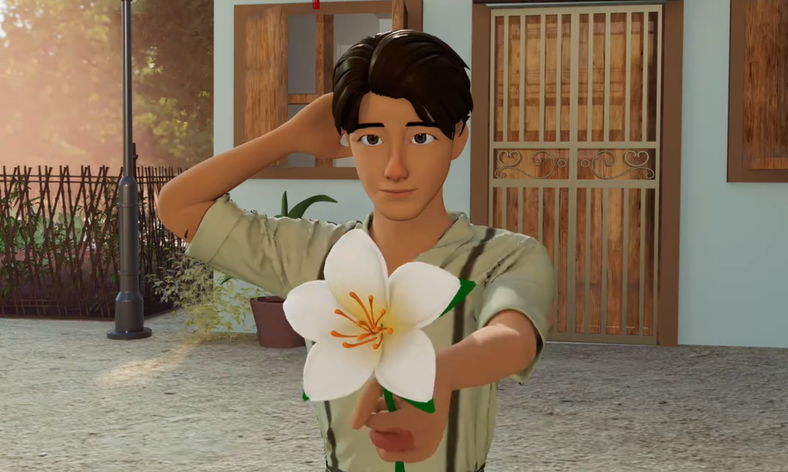
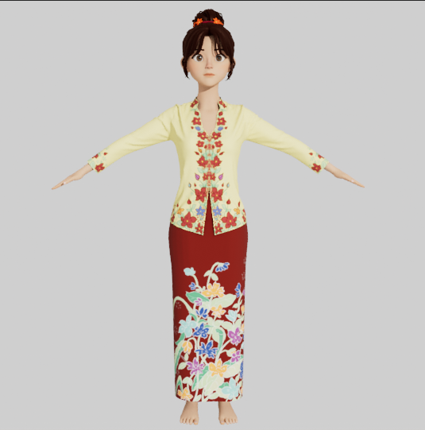
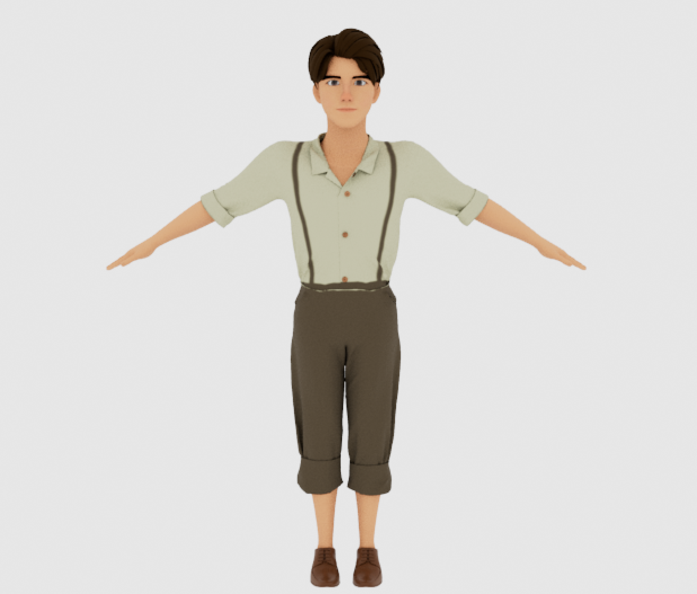
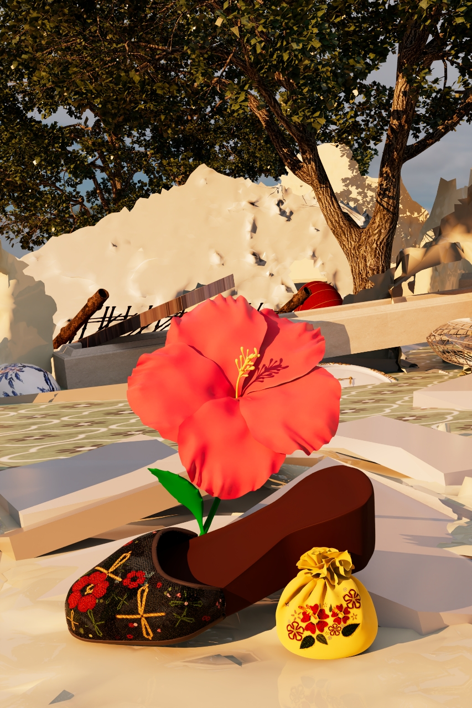
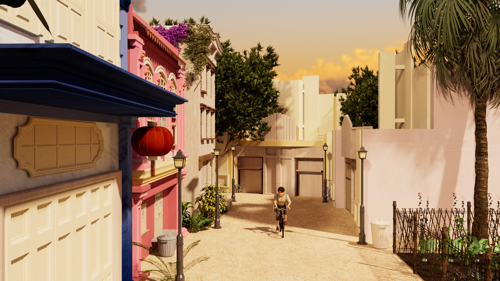

BUNGA RAYA木槿 · 3D ANIMATED SHORT
↓
Raise peace, drop war.
AWARD SCREENING
A romance on a neighbourhood street in Melaka during World War II, told through warm interiors, lantern-lit evenings, and a flower passed from one person to another.
Environment design, character design and modeling, animation, lighting, compositing, and rendering.
Watch the full film on Bilibili ↗


